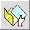
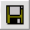

At the top of this page, you see a series of buttons that control how the Elk program works. When you move the
cursor over any of these buttons, you will see a short description of their purpose. Below the buttons is a label
that extends the full width of the picture. This label will contain error messages encountered during the
program operation. Immediatel below the buttons are a label, a drop down menu, and a text field. These GUI components
respectively contain the name of the active font family, the font size, and the name of the language to which
the keyboard layout pertains. Under this is a preview line that displays characters from the selected font.
We will now describe the operation of each of the control buttons in more detail.
 |
This button will reset the Elk program to its initial state. |
|  |
When you click on this button, a dialog will open up to allow you to select a .ttf font file of your choice. You can also open
a .ttf file by dragging the file from an open folder over the Elk application frame and then releasing the mouse.
Once selected, Elk will display the font on the left of the display, and fill the virtual keyboard (on the right under the button
panel) with default settings. You will
also see the name of the font family in a label with the title, "Font:" to the left and a preview of how the font looks.
If the font size is to small (or too big), simply click on the down arrow by the size combo box and select a size that is more
appropriate.To alter the keyboard map, please refer to the Keyboard Maps page.
|
|  |
The save button to the left will create a .ttf file for you based on the font being displayed. In the dialog that
appears, you select an appropriate folder name. The created file will reflect the keyboard mapping that you created using
no modifiers and the shift modifier. You will need to enter a language in the text field shown under the help button. By
default, this name will be appended to the original .ttf file name, though you can override the name if you wish.
To install fonts, you need to copy them to an appropriate system folder. On windows systems, the folder is c:\Windows\fonts.
On Mac systems, there are two alternatives. The first is the Fonts folder within the Library folder of you home directory. The
second is the Fonts folder within the global /System/Library folder.
|
 |
After creating a keyboard mapping, you can click this button to export your key map to a .keylayout file. A dialog will
appear to allow you to navigate to a folder and save the mapping.
|
|
The import button allows you to enter .keylayout files that contains pre-existing keyboard maps. The .keylayout files
are in XML and are popular on MAC systems where they are created using the UKELELE program. You can also open a .keylayout file
by dragging the file from an open folder over the Elk application frame, and then releasing the mouse.
The ELK program
allows you to access, modify, and create these files on any platform. The Elk Keyboard program enables Windows systems to utilize
these layouts. ACORNS software can seamlessly use these files on all platforms, including Linux. After you import a .keylayout
file, you will likely see a series of dead key sequences shown in the bottom panel of your display. Please refer to the
Dead Key page for more information.
|
 |
The help facility enables you to get information regarding operational aspects of the Elk software. This page is part of that facility.
|